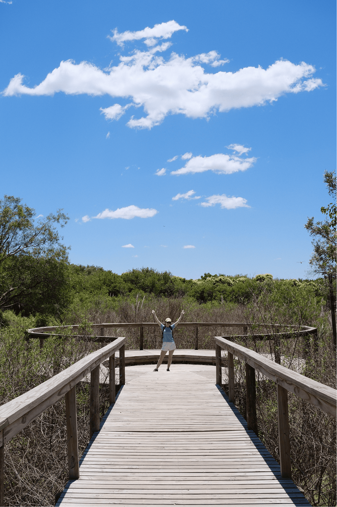

Buenos Aires — la mise en route
Capitale fédérale · Río de la Plata
Première impression à la descente de l'avion : la chaleur humide, evidemment ici c'est l'été. Après une grosse escale à Madrid nous foulons enfin le sol de l'amérique du sud mais pas sur n'importe quelle terre, l'Argentine. Exténués par les heures d'avion et le vacarme qui nous tombre dessus à la sortie de l'avion, nous avons rapidement fait de tomber dans le piège à touriste un Taxi qui se régalera de notre crédulité quant aux prix et qui nous conduira à plus de 150km/h jusqu'à notre Hostel dans le quartier de Montserra sur des routes ou les panneaux n'éxedaient pas 70km/h, mais comme dirait un copain à moi "La classique, ça n'aurait pas bien commencé si ça avait été l'inverse" et en y repenssant, il avait tellement raison.
Les premiers jours sont à la fois excitants et compliqués, tout nous étonne, les yeux sont grands ouverts, les jambes fourmillent à l'idée de découvrir, c'est la première foisque nous sommes si loins de nos familles et de nos amis, de la Françe et de tout nos repères, ça nous animent mais ça nous inquiète aussi. En plus je tombe malade, grosse fièvre, dès le deuxième jour, une fichue grippe venu de Françe, quelle merde ! Transpiration à grosse goûte et raideurs dans tout le corps mais je ne veux pas inquiéter Nono qui elle aussi à parfois un peu de mal. Nono c'est ma copine, on partage tout depuis bientôt 10 ans, c'est avec elle que j'ai grandis, grâce à elle que j'ai muris, bref on se doit beaucoup mais moi encore plus.
On enchaine les quartiers, Montserra le quartier de notre hostel et ses différents batiments et places historiques aux styles très européens, un soir on prend même un cour de tango, le prof felicitera Nono pour son aisance naturelle et me fera comprendre avec son espagnol bien argentin que j'ai la rigidité d'un balais... Qu'est ce que j'aurais aimé qu'il ait tord... On continue avec San Telmo notre quartier favoris de Buenos Aires, on y déguste un asado délicieu, célèbre barbecue traditionnel argentin, au Desnivel et on se mange empanadas et Choripan au Mercado de San Telmo, vous l'aurez compris, on aime manger ! La visite se poursuit par le quartier populaire de la Boca avec le super stade de l'équipe Boca Junior, bien connu dans le monde des fans de foot. Le quartier est aussi connu pour ses couleurs et sa rue emblématique "Caminito" jonché d'artistes peintres.
Notre step à Buenos Aires se terminera par la visite de Parlermo à la suite de quoi nous prendrons le premier bus d'une longue série pour rejoindre Puerto Madryn et la Péninsule Valdes
